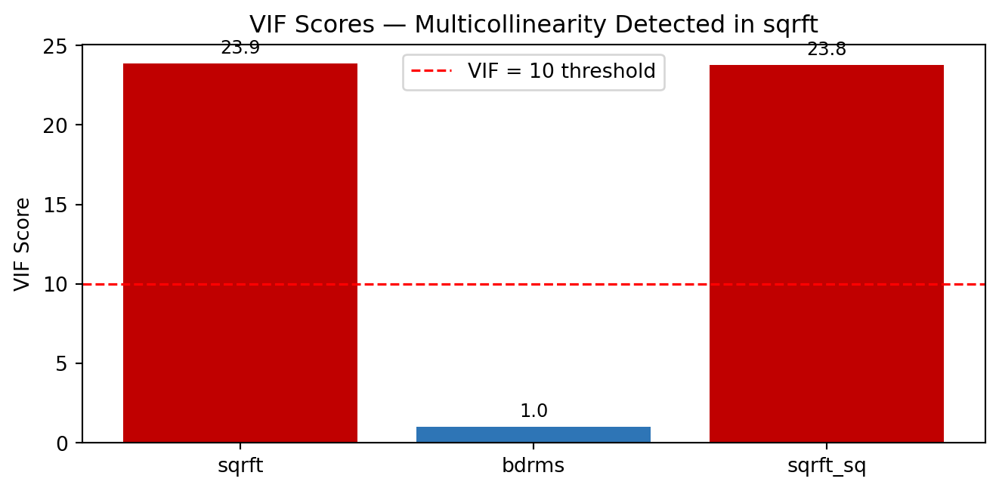
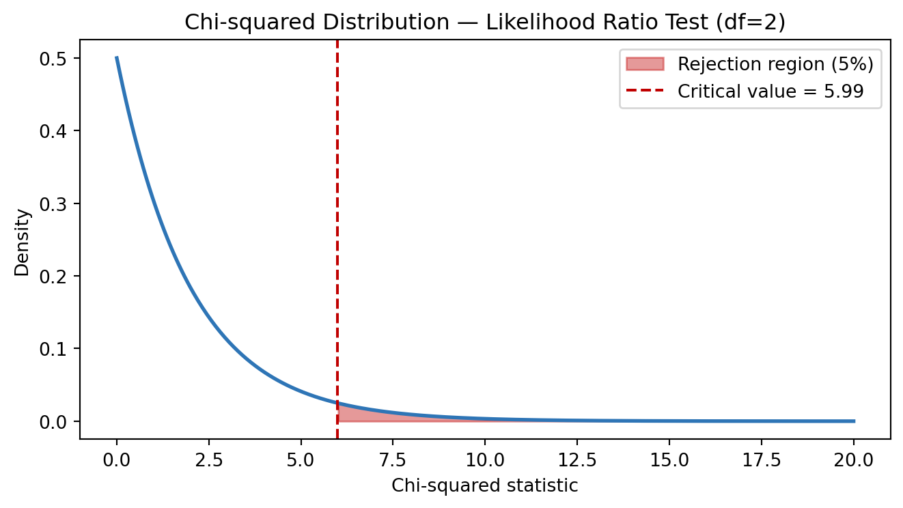

An overview of my R skills developed through the Advanced Econometric Analysis module at Kobe University in third year, covering OLS regression, panel data, binary models and time series.
I studied R during Advanced Econometric Analysis at Kobe University in third year. The module covered applied econometrics using RStudio — from OLS regression and data manipulation through to panel data models, time series diagnostics and binary choice models. All five problem sets are demonstrated below using Python to replicate the econometric concepts and R code logic.
NoteModule
Advanced Econometric Analysis — Year 3, Kobe University (Exchange)
Five problem sets covering: OLS regression, multicollinearity, interaction terms, panel data, serial correlation, difference-in-differences, linear probability models and logit models.
1. Data Manipulation & OLS Regression
The first problem set used US airfare data to practice data cleaning, indicator variable creation, and OLS regression — core R skills that apply across every subsequent dataset.
A positive residual means the model is underpredicting — the actual fare was higher than expected. A negative residual means the model is overpredicting — the actual fare was lower than expected. Smaller residuals indicate a more accurate model.
2. Multicollinearity & Model Specification
Problem Set 2 used house price data to explore multicollinearity — what happens when independent variables are highly correlated with each other.
Adding a squared term \(sqrft^2\) introduced multicollinearity because \(sqrft\) and \(sqrft^2\) are highly correlated. The VIF (Variance Inflation Factor) test confirmed this — a VIF above 10 indicates multicollinearity:
\[VIF_j = \frac{1}{1 - R^2_j}\]
Where \(R^2_j\) is the R-squared from regressing variable \(j\) on all other independent variables. In the homework, \(sqrft\) had a VIF of approximately 40 — well above the threshold.2
Show code
np.random.seed(7)n =88sqrft = np.random.uniform(500, 4000, n)bdrms = np.random.randint(1, 7, n)price =0.128*sqrft +15.198*bdrms + np.random.normal(0, 40, n)sqrft_sq = sqrft **2def vif(X_df, var): y = X_df[var] X = sm.add_constant(X_df.drop(columns=[var])) r2 = sm.OLS(y, X).fit().rsquaredreturn1/ (1- r2)df_h = pd.DataFrame({'sqrft': sqrft, 'bdrms': bdrms, 'sqrft_sq': sqrft_sq})vif_scores = {v: vif(df_h, v) for v in df_h.columns}fig, ax = plt.subplots(figsize=(7, 3.5))colors = ['#C00000'if v >10else'#2E75B6'for v in vif_scores.values()]bars = ax.bar(vif_scores.keys(), vif_scores.values(), color=colors)ax.bar_label(bars, fmt='%.1f', padding=3, fontsize=9)ax.axhline(10, color='red', linestyle='--', linewidth=1.2, label='VIF = 10 threshold')ax.set_ylabel('VIF Score')ax.set_title('VIF Scores — Multicollinearity Detected in sqrft')ax.legend()plt.tight_layout()plt.show()

Figure 2: VIF scores — sqrft has severe multicollinearity when sqrft² is added
3. Interaction Terms & Partial Effects
Problem Set 3 used student attendance data to model how the effect of prior GPA on exam scores depends on attendance rate — an interaction effect.
This means the effect of prior GPA is negative at low attendance and positive at high attendance — a student with a high GPA who rarely attends class may actually perform worse.
Figure 3: Partial effect of priGPA on FinalExam — varies with attendance rate
NoteTheta interpretation
By rewriting the model centred at the mean attendance rate (82%), the coefficient \(\hat{\theta}_1 = \beta_2 + \beta_5(82) = 4.36\) gives a direct interpretation: at the average attendance rate, a one-unit increase in prior GPA increases the final exam score by 4.36 points.
4. Time Series & Serial Correlation
Problem Set 4 used fish market data to introduce serial correlation — a common issue in time series data where residuals are correlated across time periods.
The Durbin-Watson statistic
The Durbin-Watson test detects first-order serial correlation in residuals:
A value close to 2 indicates no serial correlation. Values near 0 indicate positive serial correlation, near 4 indicate negative serial correlation. In the homework, \(d = 1.744\) — close to 2, suggesting no significant serial correlation.3
Figure 4: Simulated residuals — testing for serial correlation with Durbin-Watson
Difference-in-differences
Problem Set 4 also covered difference-in-differences (DiD) — a quasi-experimental design to estimate causal effects. The model examined the impact of a garbage incinerator on nearby house prices:
The coefficient \(\beta_3\) is the DiD estimator — it captures the additional price decline for houses near the incinerator after it became active, compared to the control group.
Figure 5: Difference-in-differences — house prices near vs far from incinerator
5. Binary Choice Models
Problem Set 5 moved into limited dependent variable models — specifically the Linear Probability Model (LPM) and Binary Logit Model for predicting credit card approval.
LPM vs Logit
The key limitation of the LPM is that predicted probabilities can fall outside [0, 1]:
This constrains all predictions to (0, 1) by design. The homework found the LPM produced impossible values (min = -1.84, max = 1.00), while the Logit model gave sensible bounds (min = 0, max = 0.97).
Where \(q\) is the number of restrictions. In the homework, \(LR = 276.31\) with \(p < 0.01\) — strongly rejecting the null that the additional variables were irrelevant.
Show code
from scipy.stats import chi2df_chi =2x = np.linspace(0, 20, 500)y_chi = chi2.pdf(x, df=df_chi)crit = chi2.ppf(0.95, df=df_chi)fig, ax = plt.subplots(figsize=(7, 4))ax.plot(x, y_chi, color='#2E75B6', linewidth=2)ax.fill_between(x, y_chi, where=(x >= crit), color='#C00000', alpha=0.4, label=f'Rejection region (5%)')ax.axvline(crit, color='#C00000', linestyle='--', linewidth=1.5, label=f'Critical value = {crit:.2f}')ax.set_xlabel('Chi-squared statistic')ax.set_ylabel('Density')ax.set_title('Chi-squared Distribution — Likelihood Ratio Test (df=2)')ax.legend()plt.tight_layout()plt.show()

Figure 7: Likelihood Ratio Test — chi-squared distribution with rejection region
The year dummy coefficients showed that the relationship between year and fare became stronger and more statistically significant over time (yr98 insignificant, yr99 significant, yr00 highly significant), consistent with the cumulative effect of inflation on airfares.↩︎
Multicollinearity inflates standard errors without biasing coefficients. It was identified by two signals: (1) both sqrft and sqrft² had negative coefficients despite the expected positive relationship with price, and (2) the gap between R² and Adjusted R² widened compared to the original model.↩︎
Generalised Least Squares (GLS) was applied when serial correlation was detected in the logged model. Serial correlation does not bias coefficients but does bias standard errors — so GLS corrects the standard errors but ideally should not change the coefficients significantly.↩︎